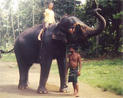
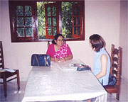
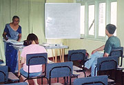
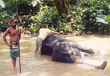
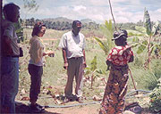
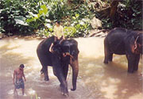

 象のお世話をするボランティアとして参加♪ |
 シンハラ語レッスンも受けました |
「スリランカという自分にとって未知の世界だったので行く前は食事が合うかなとか、言葉が通じなくてトラブルがあったらどうしようといったような不安はありましたが、事前に下調べしたり、逢坂さんの方に相談したりすることで不安というよりも逆にわくわくして参加をしました。
この留学プログラムに決めたのは、まずスリランカであるということと料金が安い、英語が母国語でないというところで決めました。ネイティブスピーカーである方が発音とかいろいろ正確に学べるとは思ったのですが、自分の英語レベルは発音以前の問題があったのでまず基礎から学ぼうと思いこのプログラムで行こうと思いました。
| 現地での英語レッスンですが、一番年配の女性の英語教師の授業はとてもわかりやすく次回の授業に活かすために講義の最後に感想を聞いたり、こちら側の英語レベルを把握してくれたので教える側からの一方的な授業にならなかったのでとても良かったです。 |
 |
全て英語でのレッスンになるので基礎（文法・単語）は日本にいるうちに最低限学んでおいた方がいいと思いました。またレッスンの内容の変更は自分がこれがやりたいというのがあれば考えておいた方がよいと思いました。
スリランカでのホームステイは、３食カレーがちょっとつらかったです。
ある程度の覚悟はしていたのですが、なかなか慣れることができませんでした。
生活レベルの違いをものすごく感じましたが、とくにこれが我慢できなかったということはありませんでした。
ホストマザーの方は大阪のおばちゃんという感じでした（笑）。
いろいろと世話を焼いてくれて一人になる事があまりなく寂しいと感じることはありませんでした。
やはり、ホームステイということで、いろいろと文化の違いや考え方の違いを直に感じて戸惑うこも多かったけれど、そういった場面では自分の意思をしっかり伝えないと絶対相手にも伝わらないのでしっかりしないといけないなと感じました。
サーンタさんには大変にお世話になりました。
人柄もよく日本語が話せるということで安心して頼ることができました。
また私は現地に着いてから帰りの飛行機のチケットを紛失してしまったのですが、その時もわざわざ空港まで足を運んでもらったりすぐに対処してくれたのでとても頼りになりました。○○の観光に行きたいなど要望にも応えてくれたのでスリランカを満喫することができました。出発前などはいろいろと教えてくれたのでとても参考になり、現地に到着してからも葉書のメッセージなどがあり細やかな気遣いが感じられて良かったです。
危険を避けるために常に必ず誰かが一緒というのは良い点でもあったけど、やはり一人で居るのに比べて自由に動けない、買い物も人を待たせていると思うとなかなかゆっくり見てまわれないなど窮屈に感じました。
その点をスタッフの人に伝えると要望を受け入れてくれてあれこれ交渉してくれたので、ミレニアム・エレファント・ファンデーションにて、象のお世話をするボランティアができました。
 象を洗ってあげました～！ |
おかげで、象使いの方たちとも仲良くなれて、ご飯をご馳走してもらったり、ジャンケンしてゲームしたりと、とても楽しくて一人で旅をするときにはできないとても貴重な体験をすることができました。 |
スリランカは、仏教とキリスト教が混在する国、という印象を受けました。
物価が安いとこが気に入りました。気に入らなかったところは特に無いです。
もっと英語が話せれば良かったと思います。ボキャブラリーが無いと会話もなかなか進まないので最低レベルの語彙は日本でもっと勉強してから行くべきだったと思いました。
また、スリランカに機会があれば行ってみたいです。」
 低開発村視察 |
 象の上って意外と高い！ |